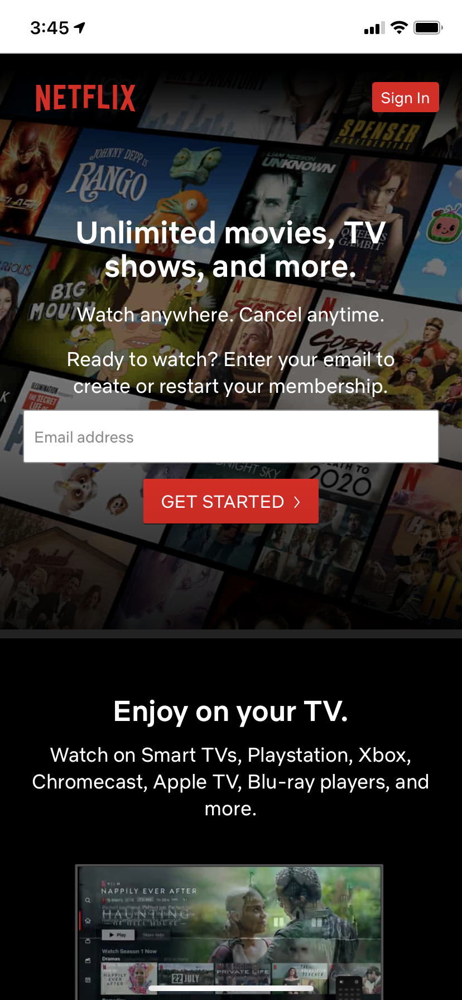
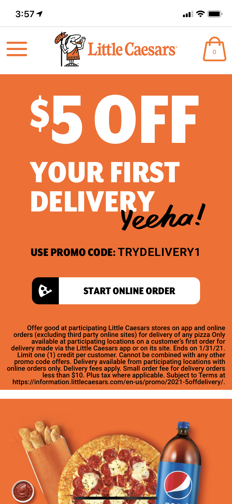
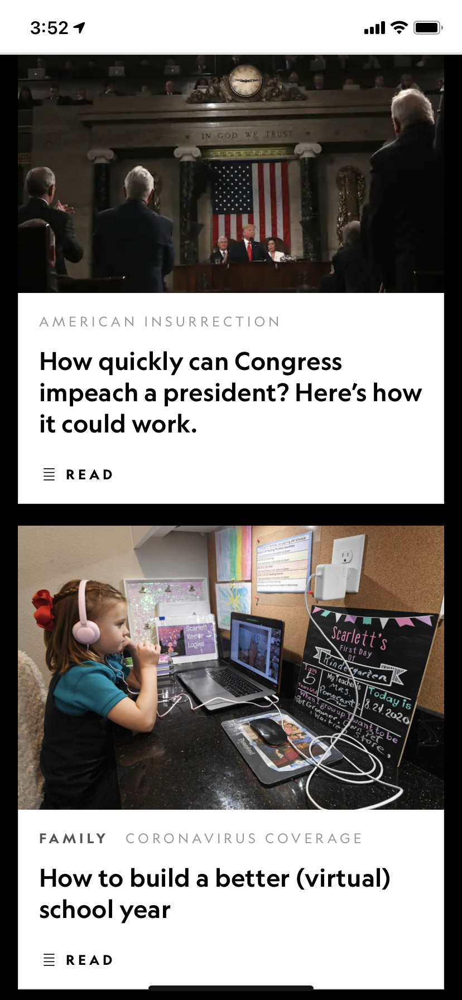

Visual Hiearchy
Netflix
netlix.com
Netflix has good visual hiearchy because of its start up screen. They have the text sized in ways that makes the eye look at what they want you to look at first. First they advertise that there are unlimited movies and tv shows to choose from. That is there selling point. Then your eye is lead down to sign up because of the visual hiearchy put into place.
Repetition
Little Ceasars
littleceasars.com
Repetition is done well on the Little Ceasars site by its use of color. This color of orange used to show repetition for the site. As you scroll down the site the color orange is used in these big boxes for more appeal to each subject. It also makes you associate their company with this color orange.
Proximity
National Geographic
nationalgeographic.com
National Geographic displays a good use of proximity. Being a kind of news site it is important to show what content belongs with each other. In this example you can see that each article is designed in a way where all the content related to that article is grouped together. It helps you know without reading anything that one article and its content is all related to each other.